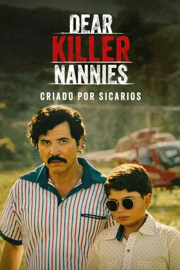
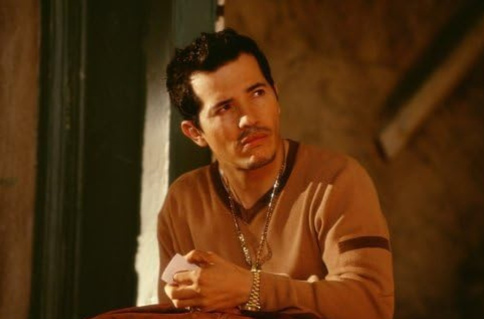
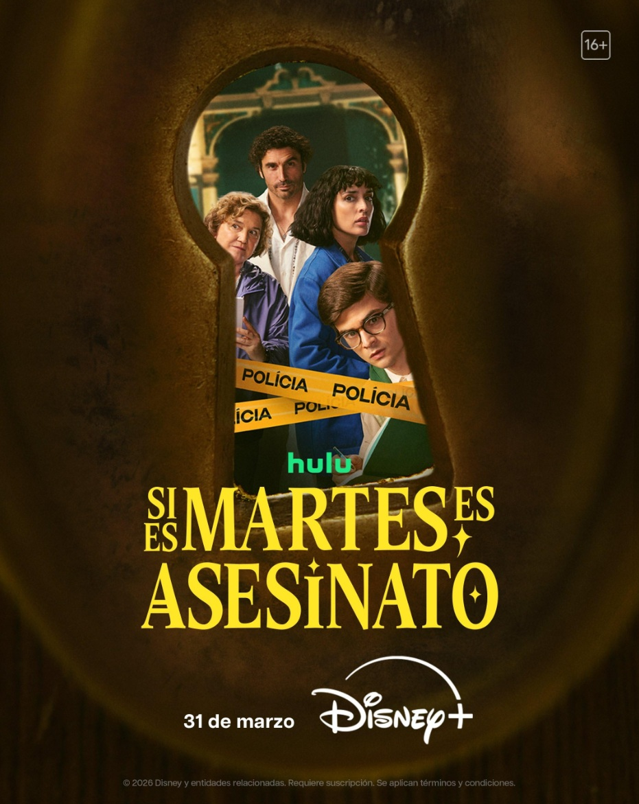
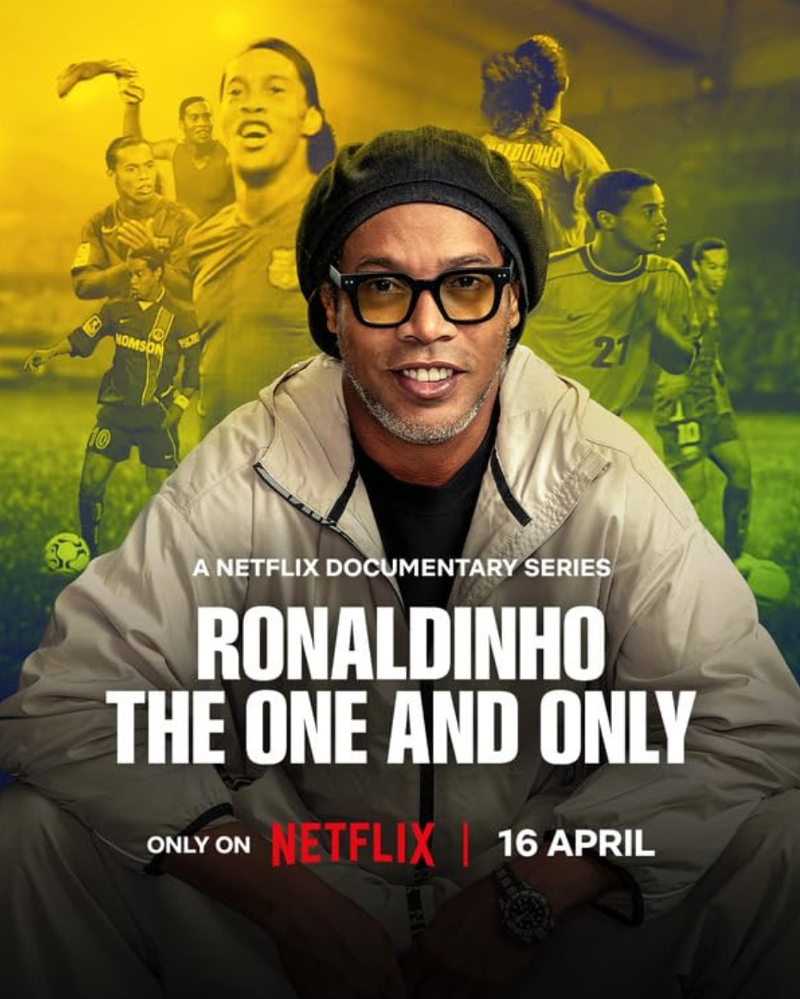
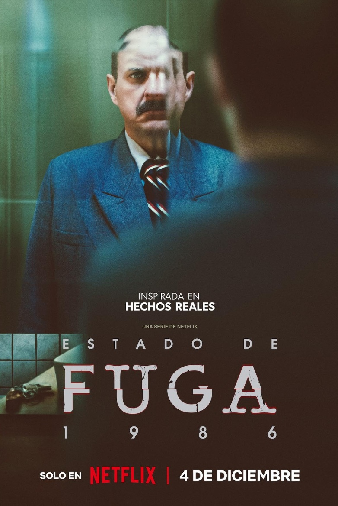
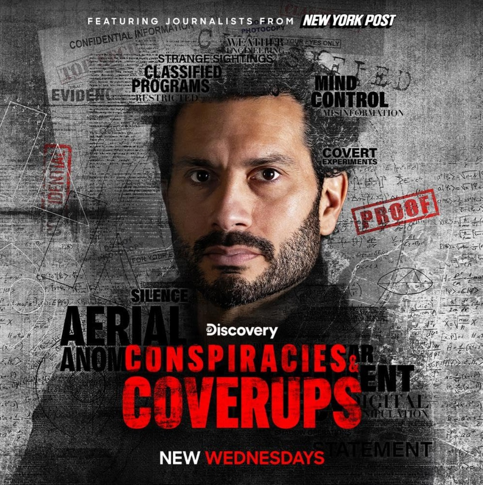

CRIADO POR SICARIOS
Basado en las memorias de Juan Pablo Escobar. El hijo de Pablo Escobar crece en el lujo, cuidado por niñeras que eran en secreto asesinos de su padre, recontando la historia del narcotraficante desde la perspectiva infantil.
- Género: Acción
- Año: 2026
- Duración: 1 TEMPORADA
- Director: Pablo Fendrik, Juan Felipe Cano
- Productores/as: Pablo Culell, Nestor Duque
- Calificación general: 5.2/10
- Clasificación por edad: +18
- Plataformas: Disney+
Tráiler
REPARTO
MIGUEL ANGEL GARCIA
ELLA BECERRA

JOHN LEGUIZAMO
JULIAN ZULUAGA M
ANDRÉS DELGADO
RESEÑAS DESTACADAS
Calificación: 3.0 / 10
dscottberman dice:
desarticulado
“Aunque hubo algunas escenas interesantes con mensajes y puntos aceptables, estuvo plagado de escenas sin sentido y otras que no transmitieron un mensaje... saltar por la línea temporal tampoco ayudó mucho... Lo vi todo, pero sentí que podría haberse producido y editado mucho mejor. Un ejemplo evidente es cómo se retrata que los Escobar, tras la muerte de Pablo, no tenían dinero, pero pudieron vivir una existencia muy cómoda, y ese tema no encajaba en absoluto... Otro ejemplo es cómo Juan Pablo intenta actuar como si fuera el líder de la familia, pero está claro que fue criado como un niño mimado sin sentido del mundo real... Se dedica tanto tiempo a intentar contar la vida de su grupo, pero los mensajes eran muy poco claros... Con mejor flujo y edición, podría haber sido un 7... En fin.”
Calificación: 1.0 / 10
GEN-90486 dice:
No muy bien...
"John Leguizamo fue una elección terrible para jugar con Pablo Escobar. Wagner Moira de "Narcos" fue mucho mejor, y Andrés Parra de El Patron Del mal fue aún mejor. Hay tantos otros actores que podrían haber usado de ambas series. La serie fue algo interesante de ver, desde la perspectiva de su hijo, pero John Leguizamo me la arruinó."
Calificación: 6.0 / 10
BarsF-4 dice:
Programa
"Ehhh... Estaba bien. No era Narcos, pero molaba, especialmente siendo una serie de Hulu. Esperaba un poco más, pero ¿qué se puede hacer? La actuación fue un poco difícil al principio, pero luego empezó a gustarme poco a poco. Me encanta John Leguizamo y se notaba que lo intentó, pero aun así fue simplemente aceptable."
Calificación: 1.0 / 10
romeroc-86636 dice:
La peor actuación de la historia
"Esto tenía potencial, pero la historia y la actuación son tan enrevesadas que resulta imposible de ver. John Leguizamo es un actor terrible, esta es una representación de una historia real, pero los actores la hacen muy poco realista y, de nuevo, muy difícil de ver. Hulu realmente ha perdido el tono y creo que en este punto estoy cancelando mi suscripción."
Calificación: 9.0 / 10
jimerome-39786794 dice:
La música!!
"Interesantes series narco-narco-narradas desde la perspectiva de sus familias, que tienen que sufrir las monstruosidades de estos hombres. Por fin, una historia que no glorifica el negocio del narcotráfico, sino que muestra sus graves consecuencias. Sin embargo, la música es la mejor parte del espectáculo. Da vida perfectamente a la época y le da un toque moderno que la hace volver a ser actual."
RELACIONADOS

SI ES MARTES ES ASESINATO
Calificación: 6.5/10
DURACION: 1 TEMPORADA
PRIVILEGIOS
Calificación: 6.6/10
DURACION: 1 TEMPORADA

RONALDINHO
Calificación: 7.1/10
DURACION: 1 TEMPORADA

FUGUE STATE 1986
Calificación: 7.0/10
DURACION: 1 TEMPORADA
